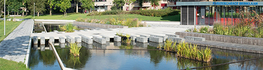

01

[公园景观] 荷兰：
Catharina Amalia公园
Brink公园其实并不像名字看上去那样是一个公园。连阿珀尔多伦(荷兰)城市地图也没有把这个空间标作公园，很明显，它也并不被视为一个公园;停放的汽车和巴士占据了这个场地。项目的挑战是把这个空间转化为一个为不同的使用者提供设施的公园，而且同时还能提供满足要求的停车位;要完成这一要求，项目建设了地下和地面停车。 Brink公园其实并不像名字看上去那样是一个公园。连阿珀尔多伦(荷兰)城市地图也没有把这个空间标作公园，很明显，它也并不被视为一个公园;停放的汽车和巴士占据了这个场地。项目的挑战是把这个空间转化为一个为不同的使用者提供设施的公园，而且同时还能提供满足要求的停车位;要完成这一要求，项目建设了地下和地面停车。